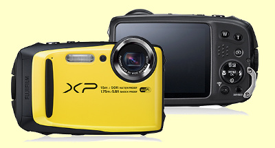
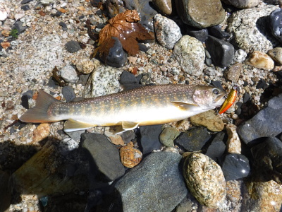
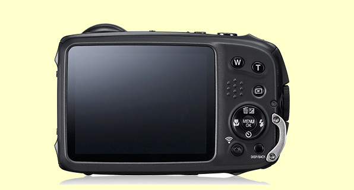

私のお気に入り
デジタルカメラ 富士フイルム FinePix XP90
これまで使っていた、ニコン COOLPIX P-5100 の調子が悪くなってきた。また、釣りで渓流を歩いている時に、転んでデジカメを水没させることが怖くて防水ケースに入れて使っていたのだが、取り出して撮してまた仕舞うことがどうにも面倒になり、防水デジカメが欲しくなった。
事前の調査では、ニコンの COOLPIX AW130 か、オリンパスの OLYMPUS STYLUS TG-870 Tough のどちらかにしようと考えていたのだが、量販店で実際に手にとって触ってみると、これら２機種とも、背面のボタン配置と操作性がいまいち複雑そうで、ピンと来なかった。防水デジカメの展示棚には他にも色々あったが、富士フイルム FinePix XP80 と、XP90 というモデルがあった。ボディは可愛い黄色で、ボタン配置もシンプル、直感的に使えそうだったので、これらを検討した結果、新しい方の XP90 に決めて、アマゾンで購入した。

以下、価格comを参考に、使ってみた感想を書いておく。
デザイン
シンプルでよくまとまったデザインであり、好感が持てる。円形のレンズ部分が大きく縁取りされており、外観上のアクセントになっている。右手で持った時に、指の掛かる部分が膨らんでいるのでこれも良いデザインだと思う。色はイエロー／ブルー／ライムの３色があるが、１番目立つイエローにした。防水デジカメらしくて良い色である。万一流れの中に落としても、見つけやすい色だと思う。
画質
有効画素数は1640万画素、フジノン広角28mm×光学5倍ズームレンズ、裏面照射型CMOSセンサーとあるが、そう言われても難しくてわからない。せいぜいＬ版にプリントするか、あとはウェブサイトの記事に400×300ピクセルくらいの画像で使うくらいなので、僕にとってはこれで十分である。広角28mmと5倍ズームは使いやすいと思った。動画についても、とても高解像度で写せるようだ。使いこなしてはいないけれど。
色の再現性については、自然な色合いで写せていると思う。

操作性
ボディ上面の、動画撮影、パワー入切、シャッターボタンの配置、そして背面のズーム、再生、消去・露出、ストロボ、マクロ、セルフタイマーなどの各ボタンの配置・大きさ共に使いやすく、操作性は良い。

メニューも段階的に降りて行ったりまた戻ったりが直感的にわかりやすく、ほぼマニュアルを読まずに使える。
バッテリー
バッテリー自体はとても小型で薄く、容量が足りるのかどうか少々心配になる。2016/09/02～04の釣行では、69枚の静止画と、14本の動画を撮影したが、残量は十分だった。予備のバッテリーを持っていったのだが、出番は無かった。撮影時には十分なようだが、後述する Wi-Fi 機能を使ってのパソコンへの画像取り込みを行うと、かなりバッテリーを消費する。
携帯性
大きさ・厚みとも手頃で凹凸も無いので、フィッシングベストの胸ポケットにすっぽりと収まる。重さも問題無い。重量は約203g（バッテリー、メモリーカード含む）だそうだ。
機能性
メーカーのウェブサイトには、15m防水、防塵や1.75mからの落下にも耐えうる耐衝撃、-10℃までの耐寒など4つのタフネス機能搭載と謳われているが、ダイビングに使うわけではないので、これほどの防水機能は僕にとっては過剰である。川に流されて数メートル沈んでもこのカメラは大丈夫であろうが。しかし、転んで水没したり、大雨の最中でも気にせず撮影できるという点では、防水機能はありがたい。また、耐衝撃性も、もし手が滑って落として河原の石に直撃した場合には、さすがにイカレてしまうのではないかと思うが、まぁ丈夫に出来ているに越したことはない。
胸ポケットから出して、右手のみで構えて撮影することがほとんどなので、光学式手ブレ補正（CMOSシフト方式）が備わっているのはありがたい。また、「水中マクロ」モードがあるので、今度ニュージーランドで大きな鱒を釣ったら、リリース前に水中で接写してみたいと思う。
このカメラにはワイヤレス機能があり、スマホと連動してワンタッチで画像を送信したり、リモート操作撮影ができるようだ。しかし、ガラケー派の自分には今のところ関係ない。しかし、専用のソフトウェアをダウンロード・インストールすることで、パソコンと無線LANで接続して画像を取り込めるのはとても便利である。いちいち防水ロックを開けてUSBケーブルで接続したり、メモリーカードを取り出したりする手間が無いのは本当に助かる。ただし、転送枚数が多いと、それなりに時間もかかるしバッテリーも消耗する。
液晶
大型3インチ高精細92万画素の液晶モニターということで、とてもはっきり見える。「液晶モニターには反射防止加工を施しており、夏の海や雪山などの強い日差しの下でも不安がありません。」とあるが、やはり直射日光の下では少々見にくいかなと思う。液晶画面内に表示される情報、アイコンはわかりやすい。専用の液晶保護フィルムを同時に購入して貼り付けてあるので、ラフに扱っても安心である。
ホールド感
カメラ前面の黒いふくらみ（フロントグリップ）と、背面の親指が当たる位置に付いているブツブツ（サムレスト）により、右手のみでの撮影に問題はない。左手も使って保持しようとすると、レンズに指がかかることがあるかもしれないので注意が必要である。
価格
2016/06/30にアマゾンで購入したが、18,907円であった。これだけの性能を有した防水デジカメとしては、十分すぎるほどコストパフォーマンスが良い。大満足である。
問題点
購入後、マニュアルを読んでいて気が付いたのだが、本来の防水性能を発揮するためには、年に一度、防水パッキンの交換が必要とのこと。サポートセンターにその費用を尋ねると、パッキンの損傷具合にもよるが、およそ一万円程度かかるそうである。律儀に毎年交換していたら、２年目で本体価格以上になってしまう。せめて五千円くらいにしてほしいものである。ネットで調べると、どのメーカーの防水デジカメも、毎年一回の防水パッキンの交換が必要とされているらしい。 2017/11に予定しているニュージーランド再訪まで、防水パッキンを交換するかどうか、悩ましい所である。今のデジカメは性能の向上スピードが著しく、モデルチェンジのサイクルが短いので、ランニングコストをかけて長く使うより、早めにニューモデルに買い換える方が合理的なのかもしれない。
私のお気に入り 目次へ
サイトマップ
ホームへ
お問い合わせ